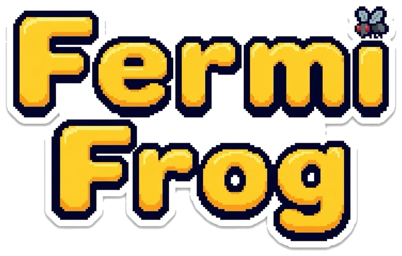
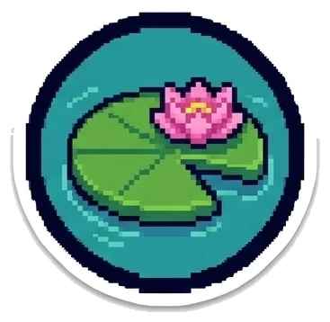
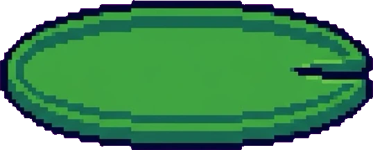
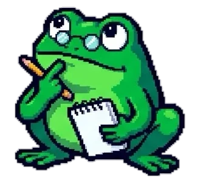
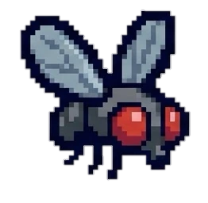
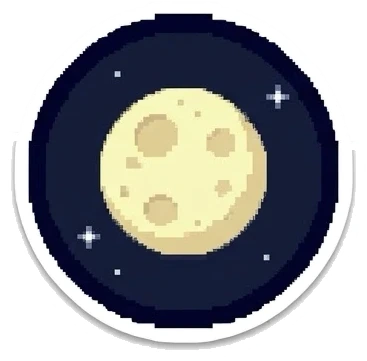
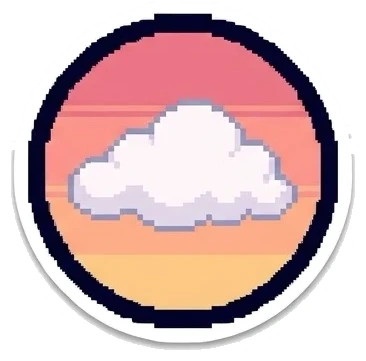
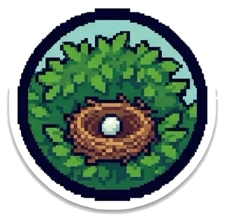
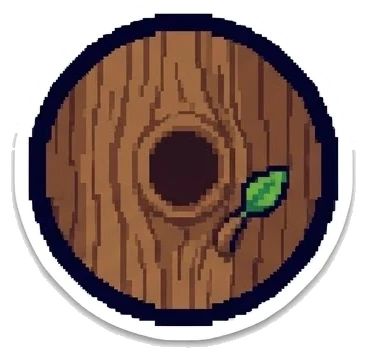
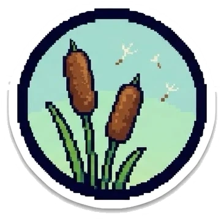

Pond 45

1 trillion to 100 trillion km
Fly 3 of 5
1T to 100T km

The climb

Moon500
Clouds400
Canopy300
Trunk200
Reeds100Today's flies
FLY 3 OF 5
1 trillion to 100 trillion km
1 trillion to 100 trillion km